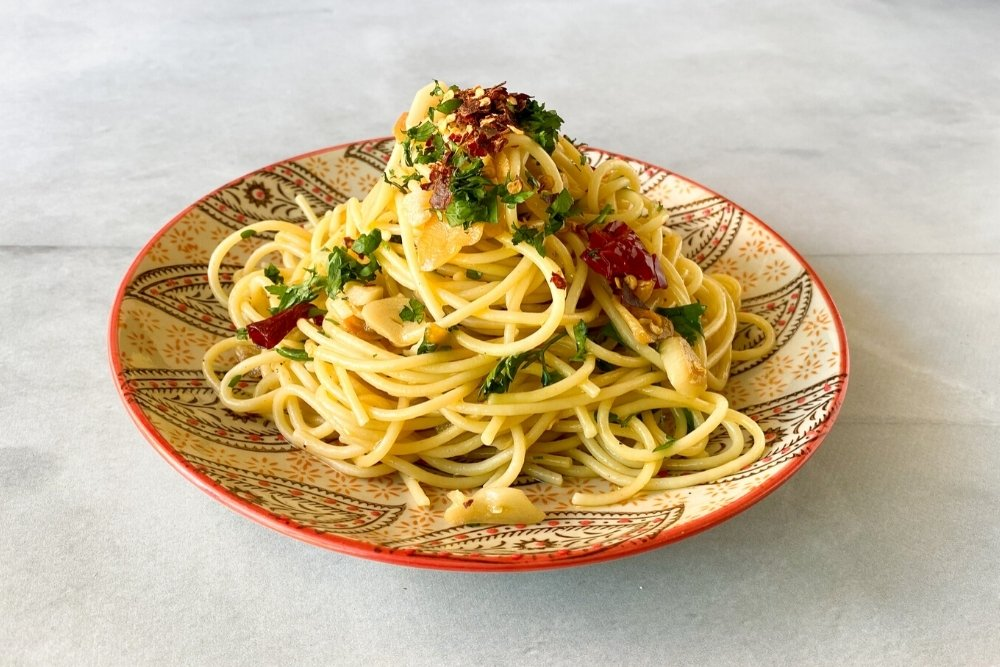

Spaghetti aglio e olio
The best kind, and so easy to make!
They're simple, good and fast. This spaghetti recipe will soon be one of your favorite ones. The best part? You only need three ingredients: garlic, olive oil, and of course, the spaghetti.

Okay, we lied to you. You can of course make this recipe with just the three ingredients we mentioned, but you can also add a couple more to make it really really flavourful. Take notes:
- Spaghetti: 200 grams
- Olive oil: about 100 ml (yep, it's a lot)
- Garlic: as much as you want - we recommend A LOT OF IT
- (Optional) Chili flakes to add a punch of spice to the dish
- Parsley
Have you got everything ready? Let's jump right into it.
- Put a couple liters of water to boil. While it warms up, let's start preparing all the ingredients
- Peel and slice finely all the garlic cloves. We usually use around 6/7 of them for this recipe, but it's because we really like garlic at home, so it's up to you!
- Once the water has broken into a boil, put the spaghetti in, making sure they're completely covered by the water. Stir a couple of times the first few minutes to make sure they don't stick.
- While the spaghetti cook, let's make the sauce! Put all the oil into a pan and bring it to medium heat. Once it's hot, add the garlic. We want it crisp, not burned! Then add the chili flakes at the very end for them to release a bit of flavor into the oil.
- Once the spaghetti are cooked as you like them, drain them. Now you just mix it with the sauce and add chopped parsley to have a better presentation. Enjoy your meal!